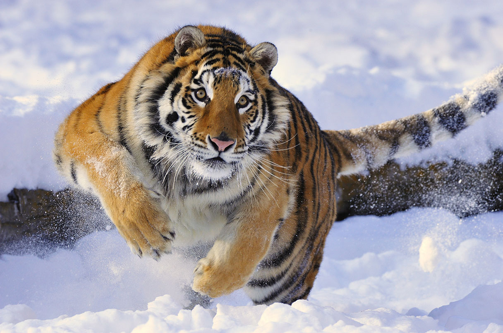

giraffe

The giraffe (Giraffa camelopardalis) is a fascinating and distinctive member of the animal kingdom, known for its towering height and long neck. Native to the open savannas and grasslands of Africa, giraffes are the world's tallest land animals, with some individuals reaching heights of up to 18 feet (5.5 meters). Their distinctive spotted coat, characterized by irregularly shaped patches, provides excellent camouflage in their natural habitat. The elongated neck, which can measure up to 6 feet (1.8 meters), is a remarkable adaptation that allows giraffes to reach high branches and foliage, their primary source of food. Despite their considerable size, giraffes are known for their gentle and social nature, often forming loose groups called towers. These herbivores have a specialized diet, mainly consisting of leaves, buds, and fruits. The giraffe's unique and graceful appearance makes it an iconic symbol of the African wilderness.
lion

The lion (Panthera leo) is a majestic and powerful big cat, often referred to as the "king of the jungle." Native to various habitats in Africa and a small population in Gir Forest National Park in India, lions are characterized by their muscular build, distinctive mane (present in males), and a social structure based on prides. Lions are apex predators, preying on a variety of ungulates, and they are known for their strength, agility, and teamwork in hunting. While females typically do the majority of hunting, males play a crucial role in defending the pride's territory. Lions have been revered in various cultures and are a symbol of strength, courage, and majesty. Conservation efforts are ongoing to protect these iconic big cats, as they face threats such as habitat loss and human-wildlife conflict
tiger

The tiger (Panthera tigris) is a magnificent and iconic big cat known for its distinctive orange coat with black stripes. It is the largest of the big cat species and is native to various habitats across Asia, from the Siberian taiga to the mangrove swamps of the Sundarbans. Tigers are solitary animals, known for their stealth and powerful hunting abilities. They are carnivores, preying on a variety of ungulates, and are capable swimmers. Conservation of tigers is of global concern due to habitat loss, poaching, and conflicts with humans. Efforts are underway to protect and preserve these endangered cats, with a focus on conservation initiatives and anti-poaching measures. The tiger holds cultural significance in many societies and is often considered a symbol of strength, courage, and biodiversity